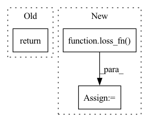

Pattern ID :29784
Before Change
train_running_loss /= loss_count
writer.add_scalar("train_loss", train_running_loss, step=epoch)
return train_running_loss
def val_epoch(model, val_loader, epoch, criterion, tokenizer):After Change
optimizer.zero_grad()
tgt_out = tgt[:, 1:] // N T-1
loss = loss_fn( logits.reshape(-1, logits.shape[-1]), tgt_out.reshape(-1))
loss.backward()
optimizer.step()
losses += loss.item()In pattern: SUPERPATTERN
Frequency: 4
Non-data size: 3
Instances Fragment ID: 88143034
Project Name: kamino666/video-captioning-transformer
Commit Name: 6560c19b1b21061f61b9959ba32fbc20aa4d44a0
Time: 2021-10-01
Author: 516015417@qq.com
File Name: train.py
M Class Name: AnonimousClass
N Class Name: AnonimousClass
M Method Name: train_epoch(3)
N Method Name: train_epoch(6)
M Parent Class:
N Parent Class:
M File Name: train.py
N File Name: train.py
M Start Line: 128
M End Line: 151
N Start Line: 53
N End Line: 79
Before Change
pred_model.train()
mean_loss = sum(val_total_loss) / len(val_total_loss)
return mean_loss
def synpick_seg_train_augmentation():
train_transform = [After Change
for (name, use_full_input, _, loss_fn) in losses:
pred = predictions_full if use_full_input else predictions
real = targets_full if use_full_input else targets
loss = loss_fn( pred, real) .item()
total_losses[name].append(loss)
pred_model.train() Fragment ID: 88143036
Project Name: ais-bonn/vp-suite
Commit Name: 7b2115f43c7b9b0ecf644451be9befcb6de23f7b
Time: 2021-07-21
Author: boltres@ais.uni-bonn.de
File Name: utils.py
M Class Name: AnonimousClass
N Class Name: AnonimousClass
M Method Name: validate_video_model(6)
N Method Name: validate_video_model(7)
M Parent Class:
N Parent Class:
M File Name: utils.py
N File Name: utils.py
M Start Line: 229
M End Line: 246
N Start Line: 211
N End Line: 234
Before Change
assert not (self.training and x.shape[0] == 1), "you must have greater than 1 sample when training, due to the batchnorm in the projection layer"
if return_embedding:
return self.online_encoder(x, return_projection = return_projection)
image_one, image_two = self.augment1(x), self.augment2(x)
After Change
target_proj_one.detach_()
target_proj_two.detach_()
loss_one = loss_fn( online_pred_one, target_proj_two)
loss_two = loss_fn(online_pred_two, target_proj_one)
loss = loss_one + loss_two
return loss.mean() Fragment ID: 88143038
Project Name: lucidrains/x-clip
Commit Name: 8cb8fed44fd862d43abaf1ddd94ffafe3b544968
Time: 2021-12-24
Author: lucidrains@gmail.com
File Name: x_clip/visual_ssl.py
M Class Name: SimSiam
N Class Name: SimSiam
M Method Name: forward(2)
N Method Name: forward(4)
M Parent Class: nn.Module
N Parent Class: nn.Module
M File Name: x_clip/visual_ssl.py
N File Name: x_clip/visual_ssl.py
M Start Line: 220
M End Line: 246
N Start Line: 222
N End Line: 241
Before Change
// 0.5 * sum(1 + log(sigma^2) - mu^2 - sigma^2)
KLD = -0.5 * torch.sum(1 + logvar - mu.pow(2) - logvar.exp())
return BCE + KLD
After Change
lm = 1e-5
def vae_loss(recon_x, mu, logvar, x):
loss_fn = MSELoss()
loss_recon = loss_fn( recon_x, x)
kl_divergence = torch.mean(-0.5 * torch.sum(1 + logvar - mu.pow(2) - logvar.exp()))
return loss_recon
Fragment ID: 88143039
Project Name: deeperlearner/pytorch-template
Commit Name: 576d9f329d45ddf4af2b320655eb909c48d5cb34
Time: 2020-11-24
Author: b04202035@g.ntu.edu.tw
File Name: model/loss.py
M Class Name: AnonimousClass
N Class Name: AnonimousClass
M Method Name: vae_loss(4)
N Method Name: vae_loss(4)
M Parent Class:
N Parent Class:
M File Name: model/loss.py
N File Name: model/loss.py
M Start Line: 12
M End Line: 20
N Start Line: 13
N End Line: 16